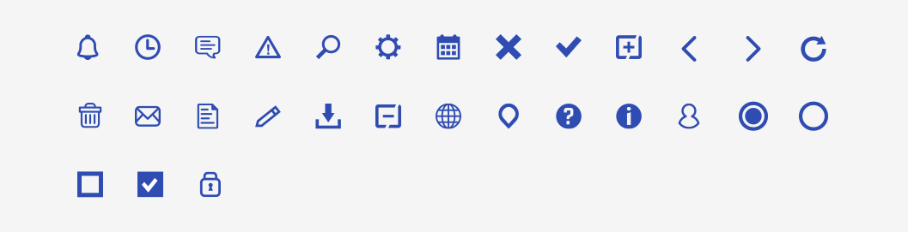
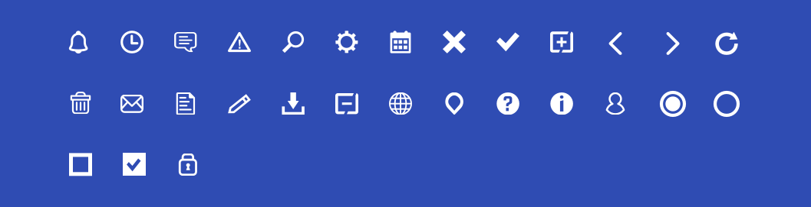
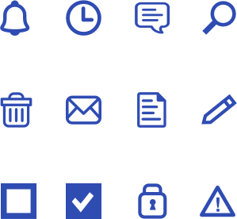
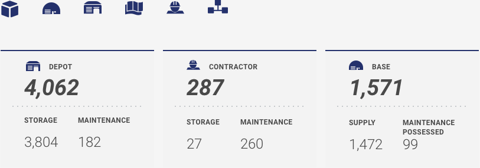
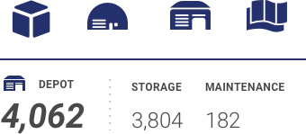

4.9 Iconography
Icons
An icon’s first job is orientation. Icons are an essential part of many user interfaces, visually expressing objects, actions and ideas. When done correctly, they communicate the core idea and intent of an element or action, save screen real estate, and enhance aesthetic appeal.
Best Practices
Icons are highly context-specific, but general best practices include:
- Use a platform or system standard icon should one exist; rarely should an application design require you to create a new icon
- Pull your icons from a single icon family / library to simplify the overall composition; these families will have similar line weights, levels of fidelity, repeating elements, etc.
- Employ icon fonts or open-source font families when possible, use .SVG (scalable vector graphics) when possible for optimal versatility and filesize
If you must design custom icons and they can’t be vector / SVG, design first in the largest viewport (desktop), giving your icon the appropriate level of detail. Subsequently, scale down for smaller viewports and remove details in order to keep icons scannable and understandable. Keep icons simple and schematic. Focusing on the basic characteristics of the object. Test them with neutral users for usability, recognizability, and memorability.



Icons and Button Labels
Icons accompanied by labels make information easier to find and scan, as long as they’re placed in the right spot. Place icons according to the natural reading order. There are two important factors in an icon’s location:
- In order for icons to serve as a visual scanning aid, users need to see them before they see the accompanying label. Place icons to the left of their labels so that users see them first.
- Align the icon with the label’s heading, instead of centering it with the heading and body. Seeing the icon first will help users to scan the page more easily.

Icons in Data Tables
Icons to the left of a number usually indicate the intent of the data, whereas icons to the right usually indicate the quality of the data. As with icons with button labels, the placement of icons should follow the natural reading order. There are two possibilities for icon placement:
- Status icons would appear at the end of the line. As seen in the example below, the user will see the subject first, then the value associated with the subject and, finally, the status of the value.
- If the icons themselves are the subject, then they would appear at the start of the line, and everything else would follow thereafter.


References
- Smashing Magazine; perspectives on icons https://www.smashingmagazine.com/2016/10/icons-as-part-of-a-great-user-experience
- The Noun Project; a comprehensive source of free and attributed icons https://thenounproject.com